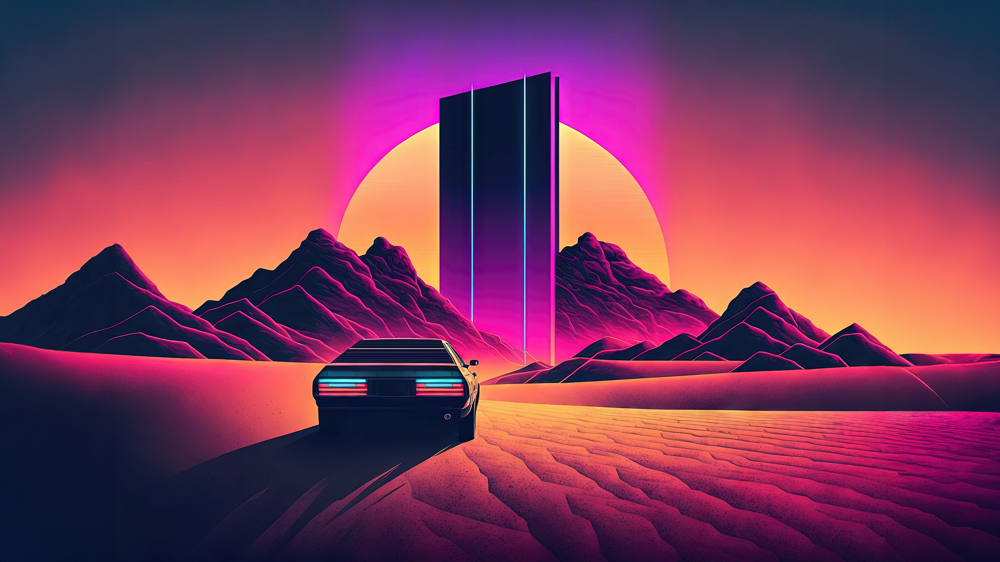

4 days ago
Outrun Monolith
A massive black futuristic monolith towers in the middle of a glowing neon desert highway, surrounded by purple and pink skies. The horizon glows with outrun gridlines stretching infinitely, and the object reflects the neon lights, giving it an aura of mystery and power. The atmosphere is surreal, a mix of retro 80s synthwave and cyberpunk dystopia.